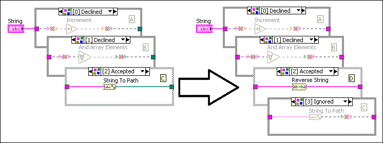

Right-click a structure border and select Add Case (or Frame or Subdiagram) After or Before, if available, from the shortcut menu to add a subdiagram. You also can press the <Shift-Enter> keys in the selector label to add a subdiagram to a structure.
Complete the following steps to make a copy of the visible subdiagram in a Case, Stacked Sequence, Conditional Disable, Diagram Disable, or Type Specialization structure and insert it after the original subdiagram.
|
Note You also can press the <Ctrl-Shift-Enter> keys in the case selector label to duplicate the visible subdiagram of a Case structure. |
|
Note If you do not use the Conditional Disable structure in a LabVIEW project, RUN_TIME_ENGINE, TARGET_BITNESS, and TARGET_TYPE are the only symbols available. If you use the Conditional Disable structure in a LabVIEW project, you also can create and define symbols using the Conditional Disable Symbols page. |
Consider the following issues when you add or duplicate a subdiagram:
Adding or deleting subdiagrams in a Type Specialization structure affects the subdiagram labels and how the VI runs. This is because the Type Specialization structure attempts to compile each subdiagram in order and declines subdiagrams with syntax errors. It accepts the first subdiagram with no syntax error and ignores the remaining subdiagrams.
For example, the following Type Specialization structure has subdiagrams A, B, and C. It declines the first two subdiagrams and accepts the last subdiagram C (indexed 2). If you add subdiagram D before subdiagram C, the index of subdiagram C becomes 3. The structure accepts subdiagram D and ignores subdiagram C because the structure compiles subdiagram D with no error before attempting to compile subdiagram C.
